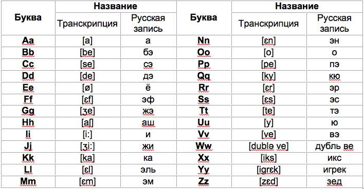
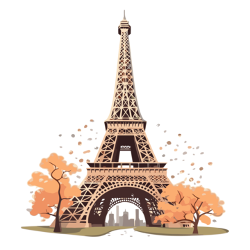
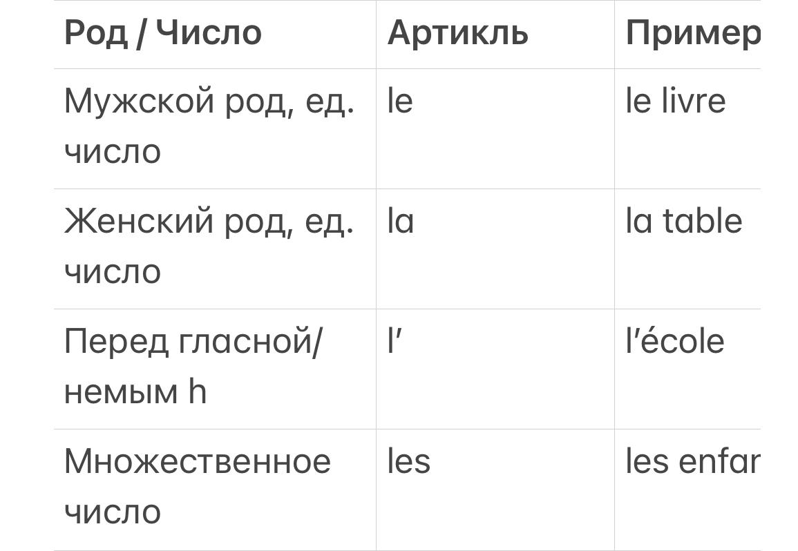
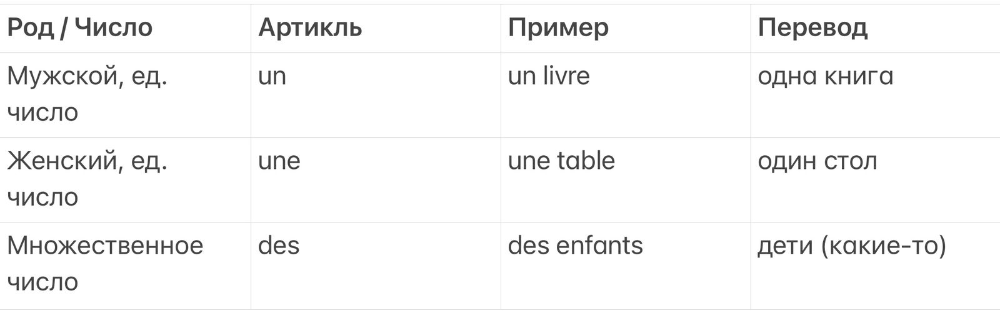
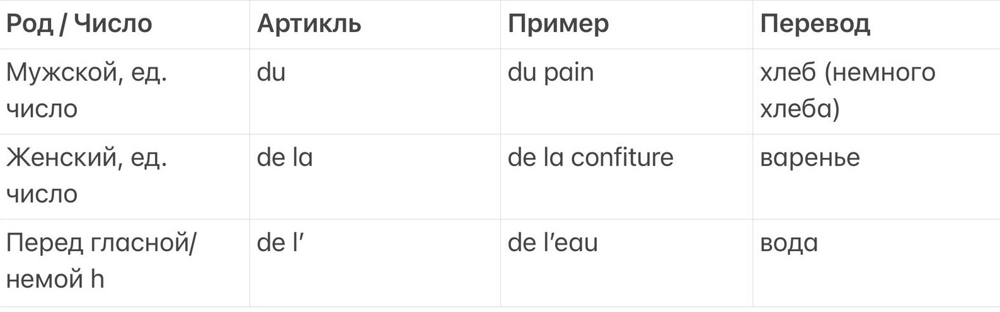
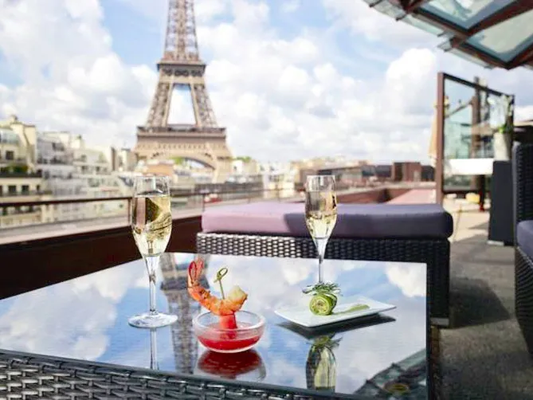
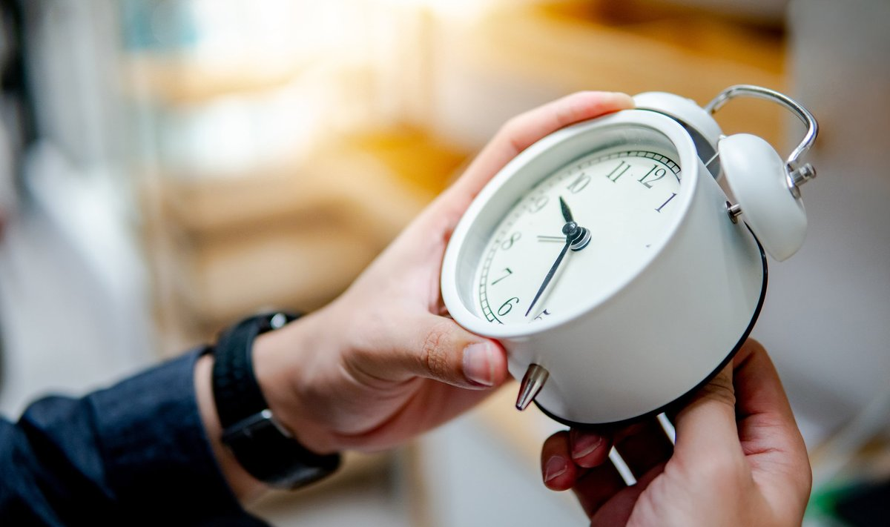

📌 Особенности произношения
Буква E может произноситься по-разному: [ə], [ɛ], или не произноситься вообще.
Носовые гласные: an, en, on, in, un — произносятся через нос.
Буква H всегда немая.
Сочетания букв часто меняют звук:
ch = [ш] (например, chat — кот)
gn = [нь] (например, montagne — гора)
ill = [й] (например, fille — девочка)
👋 Урок 2: Приветствие и знакомство
1. Универсальные приветствия
формальности и близости общения. Вот основные:
обстановке. Например: с коллегами, в магазине, при знакомстве.
Например: при входе в ресторан вечером.
одноклассников. Часто используется как приветствие и прощание.
пары. Немного игривое и нежное — не для официальной обстановки.
существительного.



— Дом (конкретный) большой.
✅ Здесь используется определённый артикль la, потому что речь идёт о конкретном доме, известном собеседнику.
J’ai un chien. (un — неопределённый, м.р.)
— У меня есть собака.
✅ Используется неопределённый артикль un, потому что собака упоминается впервые, и она не конкретная.
Elle mange du chocolat. (du — частичный, м.р.)
— Она ест шоколад.
✅ Артикль du — это частичный артикль, который используется с неисчисляемыми существительными, например,
еда или напитки. Он означает "немного".
За каждый правильный ответ вы зарабатываете баллы. Это отличный способ улучшить свой словарный запас и
весело потренировать французский язык!
После каждого ответа вы увидите результат: правильный или неправильный.
За каждое правильное решение вы получите баллы, а в конце игры — общий счёт.
Загрузка вопроса...

(Доброе утро, я хотел бы черный кофе и круассан, пожалуйста.)
Официант: Bien sûr, c'est pour ici ou à emporter ?
(Конечно, это здесь или на вынос?)
Клиент: Sur place, merci.
(Здесь, спасибо.)
Официант: Voilà, votre commande. Bon appétit !
(Вот ваш заказ. Приятного аппетита!)



(Что вы рекомендуете?)
Официант: Notre spécialité est la croûte au fromage.
(Наша специалитет — хлеб с сыром.)
Клиент: Je vais prendre ça, avec une salade verte, s'il vous plaît.
(Я возьму это с зеленым салатом, пожалуйста.)
Официант: Très bien, et comme dessert ?
(Отлично, а на десерт?)
Клиент: Une crème brûlée, merci.
(Крем-брюле, спасибо.)
(Здравствуйте, мадам, могу я вам помочь?)
Покупатель: Oui, je cherche une chemise taille 38.
(Да, я ищу рубашку размера 38.)
Продавец: Voici une chemise bleue. Elle vous va très bien.
(Вот синяя рубашка. Она вам очень идет.)
Покупатель: Combien coûte-t-elle ?
(Сколько она стоит?)
Продавец: Elle coûte 45 euros.
(Она стоит 45 евро.)
Покупатель: Je la prends.
(Я беру ее.)
d'eau. (Добрый день, я хотел бы пакет макарон и бутылку воды.)
Продавец: Voilà, c'est tout ?
(Вот, это все?)
Клиент: Oui, c'est tout. Combien je vous dois ?
(Да, это все. Сколько я вам должен?)
Продавец: Cela fait 3,50 euros.
(Это будет 3,50 евро.)
Клиент: Voici 5 euros.
(Вот 5 евро.)
Продавец: Voici 1,50 euros et votre reçu.
(Вот 1,50 евро и ваш чек.)
(Извините, где ближайшая станция метро?)
Прохожий: C'est tout droit, puis à gauche. Vous verrez l'entrée sur
votre droite.
(Прямо, затем налево. Вы увидите вход справа.)
Пешеход: Merci beaucoup !
(Большое спасибо!)
(Который час, пожалуйста?)
Прохожий: Il est trois heures et demie.
(Три с половиной.)
Пешеход: Merci !
(Спасибо!)